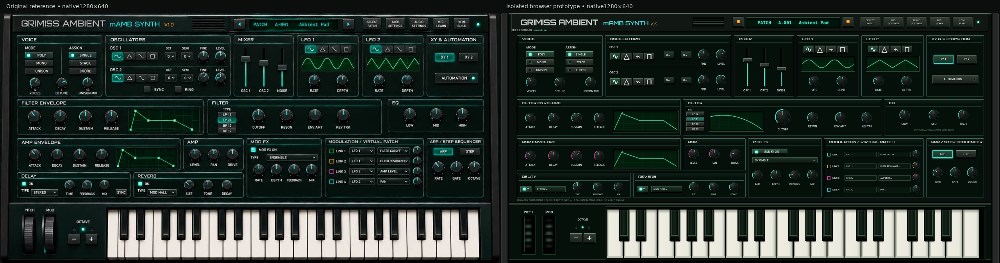
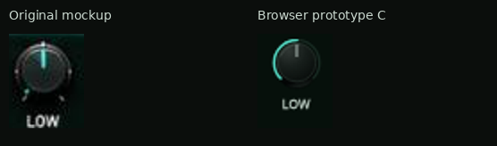
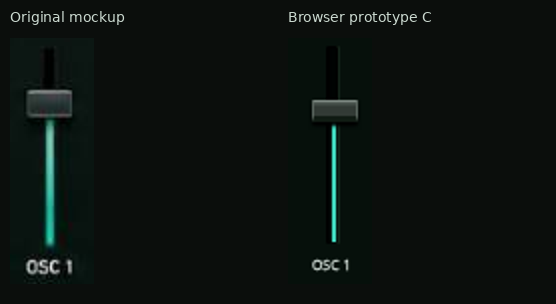
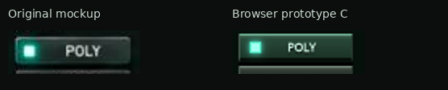
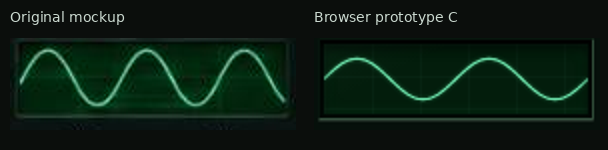
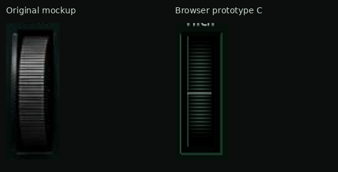
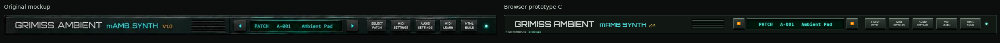
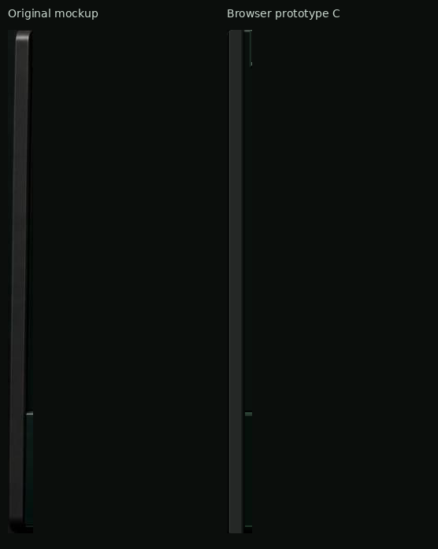
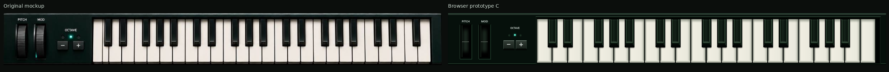

Hardware reconstruction C — isolated approval prototype
Review checkpoint B. This is a separate browser-rendered material, cabinet and key-geometry prototype. Its controls demonstrate local interaction only: there is no synthesizer audio, MIDI or patch engine attached. The playable synth and its DSP are not modified by this prototype. Full visual rollout awaits approval.
Open interactive prototype1920 × 1080 / keys visible1920 × 1080 / keys hidden1600 × 900 / keys visible1600 × 900 / keys hiddenBrowser checks
Cabinet and overall proportion comparison
Both source images are native1280 × 640. Open the full-resolution image to inspect them at1:1; the page may scale the combined image uniformly to fit your window. Section positions preserve the approved envelope/filter/EQ amendments. The prototype demonstrates a coherent full cabinet around isolated component samples, not a replacement functional interface.

Component comparisons — equal native scale
Left: supplied original mockup. Right: actual Chromium screenshot. Crop dimensions and identical display zoom are recorded in comparison-scale.json. No independent scaling, colour correction or perspective adjustment has been applied.
Knob

Fader

Switch

Screen

Wheel

Header

Cheek

Keyboard — normal construction and stepped-key diagnostic
The required three-octave range remains C3–C6:22 white keys and15 black keys. The bank fills the953-unit opening. White keys now use actual notched silhouettes; black keys sit within those cut-outs and have raised top, side and front faces. E–F and B–C retain the correct no-black-key gaps. No note names are printed on the key faces.

Both complete key housings use1235 ×149 native pixels. The mockup depicts more white-key fronts than the approved37-note range; consequently, exact per-key width matching and full housing occupancy cannot both be reproduced. This prototype preserves the user-approved range and full-width occupancy, not an invented extra key range.Diagnostic only — black-key bodies hidden
This separate browser capture temporarily hides black keys to expose the real white-key cut-outs. The normal prototype retains all black keys. Hit tests verify that every white-key notch is excluded from that white key's pointer region.Comparison with a physical synthesizer keyboard
The user-provided Behringer MS-5 photograph supplies the physical construction reference: narrow upper white-key stems, full-width white fronts, black-key bodies seated between those stems, and uninterrupted E–F/B–C boundaries. Prototype C uses these stepped silhouettes and raised black-key faces instead of placing black rectangles over continuous white rectangles.
The real photograph was supplied earlier in the conversation. A new local copy was unavailable; the secondary product-image download was blocked by the environment policy. No equal-scale photographic measurement or new photo capture is claimed. Physical MS-5 reference source. Colours remain GRIMISS charcoal/teal/magenta/amber; the MS-5 palette is not adopted.
What remains intentionally different
| Reference or approved requirement | Prototype decision |
|---|
| Near-black enclosure with integrated flat housings | 22-unit graphite side housings, restrained edge highlights, one recessed deck and physical keyboard divider; no tubular rails. |
| Compact reference rotary and fader geometry | 28-unit rotaries with thin pointers/active arcs; compact23 ×11 caps over99-unit recessed slots. Enlarged cutoff remains an intentional approved exception. |
| Approved filter/amp envelope, filter and EQ amendments | 420-unit envelope widths,510-unit filter and256 ×94 EQ. Prototype EQ demonstrates only material/control appearance; the working four-control EQ and response/detail view remain intact in the playable synth. |
| Additional functional controls and graphs | This isolated prototype does not substitute its simplified sample controls for working features. Rollout must retain original nodes/bindings and use approved compact/detail arrangements where needed. |
| Original mockup keyboard shows more fronts | Approved37-note C3–C6 bank retained across the full housing. Geometry compromise is explicitly documented above. |
Browser validation
Chromium captures cover1920 ×1080 and1600 ×900 with keyboard visible and hidden, plus a native1280 ×640 capture. Checks cover bounds/overflow, all37note identities, notched pointer hit regions, local knob/fader/switch interaction, key press/release and local pitch-wheel spring return. These checks do not claim audio, MIDI or physical-device validation.
Rebuild: node prototypes/reconstruction-c/build.cjs. Capture/check: node prototypes/reconstruction-c/verify.cjs; node prototypes/reconstruction-c/components.cjs; python prototypes/reconstruction-c/compare.py.